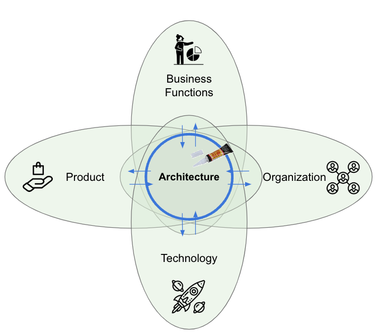

Thinking Like an Architect: Architects as Superglue
IN THIS SECTION, YOU WILL: Understand the view on architects as superglue (people who hold architecture, technical details, business needs, and people together across a large organization or complex projects) and get valuable tips on developing “superglue” abilities.
KEY POINTS:
- Architects in IT organizations should develop as “superglue,” people who hold architecture, technical details, business needs, and people together across a large organization or complex projects.
- Architects need to be technically strong. But their unique strengths should stem from being able to relate technical issues with business and broader issues.
To succeed as an IT architect, it’s not enough to simply master tools, frameworks, or technologies. Achieving success requires developing the right mindset—a blend of beliefs, attitudes, and mental models that influence how you perceive challenges and approach your work.
The Superglue Mindset: What It Takes to Be an Effective IT Architect
One of the most powerful metaphors for cultivating this mindset is that of the “superglue” architect. This concept captures the essence of what great architects do, particularly in complex, dynamic organizations where collaboration and alignment can be more challenging than coding itself.
What Does It Mean to Be “Superglue”?
The superglue metaphor emphasizes the role of architects as the binding force connecting various components of an organization—people, teams, systems, strategies, and goals. This idea was popularized by Adam Bar-Niv and Amir Shenhav from Intel, who observed that, while not everyone can be a superhero in a crisis, organizations greatly benefit from individuals who quietly and consistently hold everything together.
Tanya Reilly builds on this concept in her discussions about “glue work”—the invisible but vital contributions that ensure collaboration, coherence, and continuity. Similarly, Gregor Hohpe describes modern architects as those who navigate the “Architect Elevator,” seamlessly moving between the penthouse (where business strategy is defined) and the engine room (where technical implementation occurs). Superglue architects thrive in this in-between space, adding value by ensuring alignment across different organizational levels.
The Role of a Superglue Architect
Superglue architects take on more than just writing technical specifications or selecting the right cloud solutions. They play a connective role across four key areas:
- Architecture – Defining technical direction, ensuring consistency, and promoting scalable design choices.
- Technology – Having a deep understanding of tools, systems, and platforms so that they can engage engineers meaningfully.
- Business Needs – Translating between strategic goals and technical feasibility, ensuring that solutions align with the organization’s actual requirements.
- People and Teams – Facilitating communication, resolving conflicts, mentoring team members, and ensuring that everyone is working towards the same objectives.
In essence, these architects serve as the organizational connective tissue. Their value lies not only in their problem-solving abilities but also in their capacity to link problems to the right solutions—and to the right people.
The Superglue Mindset in Action
Cultivating a superglue mindset involves adopting a set of perspectives and habits that go beyond technical skills. It includes:
- Curiosity: Always seeking to understand how things work, from legacy systems to new business initiatives.
- Empathy: Understanding the pressures and concerns of developers, product managers, and executives alike.
- Adaptability: Thriving in ambiguity and helping to clarify direction when others are still forming opinions.
- Strategic Thinking: Seeing the big picture and helping others connect their work to broader objectives.
- Humility: Recognizing that your most significant contributions might not be a brilliant design, but rather a well-facilitated conversation.
Why This Matters
In complex organizations, architecture is not only about systems; it’s also about relationships, priorities, and timing. An architect with a “superglue” mindset acts as a force multiplier, enhancing the efforts of teams, bridging gaps between silos, and fostering cohesion in environments that might otherwise fragment under pressure.
This mindset is especially crucial when managing change. Whether adopting a new platform, rethinking system architecture, or aligning business and IT strategies, the work of change takes place in the gaps—and that’s where superglue architects excel.
If you’re building your architecture practice or mentoring future architects, instilling the superglue mindset is one of the most effective ways to ensure long-term, sustainable success—not just for individuals, but for the entire organization.
Superglue Architects: Keeping the Organization United
In IT organizations, deep technical knowledge is essential, but it is not what truly distinguishes great architects. What sets superglue architects apart from other technical specialists is their ability to connect people, priorities, and systems through exceptional relational skills.
Superglue architects are more than just problem solvers—they are connectors. They communicate clearly, negotiate thoughtfully, and influence strategically. These people skills, combined with their technical credibility, make them invaluable for ensuring coherence, alignment, and momentum throughout the organization.
 Figure 1: Architects serve as superglue, connecting development teams with business stakeholders and linking their teams with internal and external communities.
Figure 1: Architects serve as superglue, connecting development teams with business stakeholders and linking their teams with internal and external communities.
Figure 1 illustrates the superglue metaphor: architects act as the binding agent between the often-disconnected parts of a modern organization. Here’s how that role plays out in practice:
Developer Whisperers
Superglue architects maintain a close relationship with development teams, deeply understanding their needs, roadblocks, and priorities. They don’t just impose architectural decisions—they collaborate, explain, and ensure that solutions are not only sound but also practical and empowering for developers.
Tech-to-Business Translators
Architects must be fluent in both technical and business languages. They help stakeholders understand how a technical decision will impact timelines, revenue, or customer experience. In doing so, they bridge the gap between technology potential and business value.
Cross-Functional Diplomats
Superglue architects work across various departments—operations, finance, marketing, HR—not just within IT. They ensure that technical strategies align with broader organizational goals and constraints. This cross-functional engagement enables them to champion solutions that are viable, sustainable, and strategically sound.
Community Connectors
Internally, architects are active contributors to knowledge-sharing communities, facilitating learning, promoting best practices, and staying attuned to emerging challenges. They help enhance the capabilities of the entire organization by engaging with others and fostering collaboration.
Industry Influencers
Outstanding architects also look outward. By participating in external forums, publishing articles, speaking at conferences, or contributing to open-source projects, they bring outside perspectives to their organizations. This external visibility positions the organization as a leader in the industry.
Why Superglue Architects Matter
While superheroes might swoop in for a dramatic rescue, superglue architects quietly prevent crises from occurring in the first place. They anticipate friction points, foster alignment, and ensure that systems, strategies, and people are working in unison.
Their presence ensures:
- Stability across fast-moving teams and initiatives,
- Clarity amidst conflicting priorities,
- Continuity in a rapidly evolving technical landscape.
Think of them as the organizational equivalent of duct tape—invisible when effective, indispensable during challenges, and always ready to hold things together when complexity threatens to unravel them.
Superglue architects don’t just connect systems—they connect vision with execution, people with purpose, and complexity with clarity. This mindset elevates them from good architects to great ones.
Superglueing in Action #1: Aligning Conflicting Organizational Goals
In many IT organizations, tensions often arise between key areas: technology, product, organizational structure, and business strategy. These areas tend to evolve at different speeds and often have conflicting priorities. Without proper alignment, the result can be poor decisions, increased complexity, stalled initiatives, and missed opportunities.
This is where superglue architects come in. They don’t create more bureaucracy or control; instead, they foster alignment and build bridges across functions. Their goal is to bring these areas closer together, creating a more cohesive, responsive, and adaptive organization.

The core value of superglue architects lies in their ability to align product, business, technology, and organizational goals, helping each function move in sync like a well-coordinated team rather than a fragmented crowd.
Understanding the Tensions
While it’s ideal for business, technology, product, and organizational functions to evolve together, the reality is often more chaotic. These domains can act like separate dancers moving to different music. When misaligned, even small efforts can become tangled, leading to delays, inefficiencies, and friction.
 Figure 2: Common misalignments across business, product, technology, and organizational domains.
Figure 2: Common misalignments across business, product, technology, and organizational domains.
Let’s examine a few real-world examples of these tensions:
Technology vs. Organization
-
Scenario: A company employs a monolithic architecture to centralize operations, aiming for control and consistency. However, the development teams struggle to move quickly, as every change requires coordination across multiple groups.
-
Impact: Innovation stalls, bottlenecks grow, and autonomy disappears. A single bug fix can trigger delays across unrelated teams.
Product vs. Technology
-
Scenario: The product teams focus on user experience across systems, but engineering has adopted microservices organized by internal domains. A seemingly simple UI feature may require coordination across several backend services.
-
Impact: What should be a minor enhancement turns into a game of “Whac-A-Mole,” slowing delivery and frustrating teams.
Business vs. Product
-
Scenario: The business alternates between cost-saving initiatives and pushes for innovation. One month, the focus is on reducing expenses; the next, it’s on aggressive feature delivery and platform overhauls.
-
Impact: Product teams struggle to plan, resources shift unexpectedly, and confusion and burnout increase.
Organization vs. Business
-
Scenario: Business goals necessitate seamless collaboration—such as launching a product—but the organization is siloed into departments like IT, marketing, and finance, each with isolated goals.
-
Impact: Strategic initiatives stall, teams miscommunicate, and projects slip due to handoffs and misaligned incentives.
How Superglue Architects Reduce Tension
Superglue architects are uniquely positioned to identify, mediate, and resolve these tensions. They understand the entire system—including its people, processes, and priorities—and help align them into a cohesive whole.
 Figure 3: Architects sit at the intersection of business, product, technology, and organizational functions to reduce misalignment.
Here’s how they achieve this:
1. Aligning Technology with Business Goals
-
Scenario: Business leaders want to cut costs quickly by moving to the cloud, but the tech team knows that rushing could create technical debt.
-
Architect’s Role: Facilitate a migration strategy that balances speed and sustainability. Translate technical risks into business terms, helping executives make informed, long-term decisions.
2. Balancing Product Ambition with Organizational Capacity
-
Scenario: Product teams want to launch features based on customer feedback, but delivery teams are overloaded.
-
Architect’s Role: Bring stakeholders together to adjust priorities or restructure teams. Suggest DevOps practices or platform changes that can support faster delivery.
3. Translating Technical Jargon for Business Leaders
-
Scenario: The business wants to reduce infrastructure costs, but engineers are planning major upgrades for security and scalability.
-
Architect’s Role: Explain why short-term savings could lead to long-term risks. Reframe technical needs as business continuity concerns to ensure critical work stays funded.
4. Coordinating Product and Technology Evolution
-
Scenario: Engineering wants to transition to a new architecture, while Product is still working with the old one.
-
Architect’s Role: Propose a clear transition strategy that allows for gradual evolution, ensuring that both teams are aligned on goals and timelines.
Supergluing in Action #2: Aligning Discussions Around Problems, Solutions, and Implementation
In complex technical environments, disagreements are inevitable. However, many of these conflicts arise not because people can’t find common ground, but because they are talking past each other.
One powerful mental model for resolving these conflicts is derived from the Theory of Constraints (TOC), developed by Eliyahu M. Goldratt. TOC is a management philosophy focused on improving performance by identifying and addressing the most critical constraint in a system.

One important aspect of Goldratt’s thinking that is particularly beneficial for superglue architects is his model for resistance to change. It identifies three key areas where disagreement typically arises:
- What is the problem?
- What is the solution?
- How should we implement it?
Figure 4: Goldratt’s model of resistance: disagreement about the problem, the solution, and the implementation.
Misalignment at any of these levels can derail collaboration. The real danger occurs when people are unaware of which level they are actually disagreeing about. Superglue architects can play a pivotal role in diagnosing and resolving these mismatches.
1. Disagreement About the Problem
“What should we change?”
Different stakeholders often define the same issue in various ways, especially in large organizations. This divergence leads teams to waste time fixing symptoms rather than addressing root causes.
Example: An e-commerce platform is experiencing slow response times.
- The database team blames inefficient queries.
- The network team blames latency.
- The backend team suspects code issues.
- The UX team thinks the slowness is caused by frontend problems.
Each group starts optimizing their own area without a shared understanding of what the core problem is. The result? Disconnected fixes, wasted efforts, and ongoing performance issues.
2. Disagreement About the Solution
“What should we change to?”
Even when teams agree on the problem, they may have differing opinions on the best way to resolve it due to varying experiences, biases, or risk tolerances.
Example: After agreeing that the database is the bottleneck:
- DBAs want a server upgrade.
- Developers suggest query optimization.
- Frontend developers see this as an opportunity to rebuild the UI layer.
- Operations propose horizontal scaling.
These competing solutions often vie for attention (and budget), delaying progress and sometimes introducing new issues.
3. Disagreement About the Implementation
“How do we make the change happen?”
Even with consensus on the problem and solution, the “how” can be just as contentious—especially across departments with different timelines, KPIs, or constraints.
Example: Everyone agrees to optimize database queries.
- Developers want to rewrite everything in one sprint.
- Operations prefers a phased rollout.
- QA raises concerns about test coverage.
- Leadership wants to see results within two weeks.
If unresolved, these differences can stall delivery, introduce risk, or create friction that undermines the initiative.
The Most Dangerous Misalignment: Talking at the Wrong Level
Often, people believe they’re disagreeing about a solution, but they may not even be aligned on the problem.
This miscommunication leads to endless debates, with teams discussing different issues under the same heading.
Example 1: Mistaking a Problem for an Implementation Debate
A development team argues over how to fix slow performance:
- One side wants code refactoring.
- Another wants new servers.
- A third suggests frontend optimization.
However, no one agrees on what’s actually causing the slowness. They’re debating implementation without a shared understanding of the root issue—similar to arguing over medication before diagnosing the disease.
Example 2: Debating Solutions Without Clarifying the Problem
A security team is divided:
- One group wants a new firewall.
- Another prefers better encryption.
The conflict appears to be solution-based. However, one group is focused on external threats, while the other is concerned about internal breaches. They aren’t aligned on what risk they’re trying to mitigate, so the solution conversation goes nowhere.
The Role of a Superglue Architect
Superglue architects play a vital role in helping teams navigate discussions, ensuring clarity and alignment. Here’s how they do it:
1. Clarify the Problem First
Architects begin by ensuring that the team explicitly states and agrees on the problem at hand. Tools such as root cause analysis, problem statements, or system maps can be useful in this process.
2. Separate Problem, Solution, and Implementation
Architects assist teams by identifying the level of discussion they are engaged in. Are they discussing what’s wrong, what should be done, or how to implement it? Recognizing this distinction often helps to reduce conflict.
3. Facilitate Neutral Communication
To foster understanding, architects utilize visuals, models, and structured dialogue. They also help translate jargon or technical nuances across different team members.
4. Introduce Multiple Perspectives
As Gregor Hohpe points out, effective architects help others understand that what may seem like disagreement is often just different perspectives on the same system. Sometimes, introducing a new perspective or model can transform conflict into valuable insight.
By keeping conversations focused and grounded, architects prevent teams from becoming stagnant. They promote alignment, highlight the real issues, and ensure that the team’s energy is directed toward addressing the right problems in the right way.
Superglueing in Action #3: Navigating Organizational Conflicts
In complex organizations, conflict is not a sign of failure—it’s a sign of interdependence. When multiple teams, priorities, and personalities come together, disagreements are inevitable. What truly matters is how these conflicts are understood, navigated, and resolved.
IT architects, positioned at the intersection of business and technology, often find themselves in the midst of such tensions. However, rather than acting as referees, great architects serve as facilitators—guiding teams toward clarity, collaboration, and shared purpose.
Figure 5: Common sources of workplace conflict include different agendas, diverse perceptions, and contrasting personal styles.
According to conflict management expert Jeff Weiss, workplace conflict often arises from three key sources:
- Conflicting agendas
- Divergent perceptions
- Contrasting personal styles
Understanding these root causes enables architects to reduce friction, build trust, and maintain alignment across diverse groups.
1. Managing Conflicts from Conflicting Agendas
Every team has its own set of priorities—and they are often all valid:
- Product wants new features to stay competitive.
- Engineering aims to reduce technical debt for long-term stability.
- Operations focuses on reliability and cost-efficiency.
These goals aren’t inherently in conflict, but without coordination, they can create a tug-of-war.
Architect’s Role: Architects help reframe the discussion from “either/or” to “yes/and.” For example, they might propose a phased roadmap that delivers incremental features while also addressing critical technical debt. By focusing conversations on shared business outcomes rather than territorial disputes, architects uncover compromises that advance multiple priorities simultaneously.
2. Addressing Conflicts from Divergent Perceptions
Misalignment often arises not from opposing goals, but from different interpretations of the same conversation.
Figure 6: Understanding different perspectives in conflict management.
Figure 6 illustrates three essential perspectives architects should consider when addressing conflicts arising from divergent perceptions:
-
“I” Perspective (personal knowledge and values): Represents individual beliefs, interpretations, and subjective viewpoints that shape how each person understands conversations and decisions.
-
“It” Perspective (external, objective, data-informed): Represents factual, measurable information and evidence-based reasoning, emphasizing a data-driven and objective view of the situation.
-
“We” Perspective (shared cultural and organizational values): Represents collective agreements, organizational culture, shared norms, and values guiding group behaviors and decisions.
Architects effectively resolve perception-driven conflicts by integrating these three perspectives, balancing individual views, objective data, and collective organizational values to facilitate mutual understanding and cohesive decision-making.
Example: A business leader leaves a meeting thinking the team committed to delivering a product in three months, while the engineers believe they only agreed to an exploratory phase.
Architect’s Role: Architects act as alignment facilitators, ensuring that expectations are clearly articulated and agreed upon. They might:
- Create shared documentation (e.g., Architecture Decision Records, meeting summaries)
- Use visual artifacts like roadmaps or architecture diagrams
- Confirm understanding by summarizing key decisions at the end of meetings
They also encourage teams to surface and test assumptions early, preventing costly misinterpretations later on. Tools like architecture analytics can help reveal different views and help unify them through data.
3. Navigating Conflicts from Contrasting Personal Styles
Not all conflict is about content; sometimes it’s about how people prefer to work.
- One person thrives in a structured, deadline-driven environment.
- Another prefers flexibility and emergent decision-making.
- A strategist may speak in broad visions, while an engineer focuses on details.
These mismatches can create friction even when the goals are aligned.
Architect’s Role: Architects often serve as translators between styles. They might:
- Translate high-level strategy into concrete technical plans
- Facilitate communication between big-picture thinkers and detail-oriented implementers
- Moderate meetings to ensure all voices are heard, including those with differing communication preferences
Tools like the culture map can help architects understand and adapt to individual and team working styles.
Superglue Architects as Catalysts for Constructive Conflict
Architects don’t need to act as conflict mediators, but they are uniquely positioned to:
- Recognize when tensions are emerging
- Diagnose their underlying causes
- Create space for resolution that benefits the broader organization
By applying structured decision-making, clarifying communication, and honoring diverse work styles, superglue architects transform conflict from a source of friction into a catalyst for alignment and progress.
Their ability to work across agendas, perceptions, and personalities helps teams navigate disagreement without losing direction—and builds trust in the architect’s quiet but powerful role as the organization’s connective tissue.## Superglueing in Action #3: Navigating Organizational Conflicts
In complex organizations, conflict is not a sign of failure—it’s a sign of interdependence. When multiple teams, priorities, and personalities converge, disagreements are inevitable. What matters is how these conflicts are understood, navigated, and resolved.
IT architects, sitting at the intersection of business and technology, often find themselves in the middle of such tensions. But rather than acting as referees, great architects serve as facilitators—guiding teams toward clarity, collaboration, and shared purpose.
Final Thoughts on Superglue Impact: Keeping Everyone on the Same Page in a Stormy Sea
In fast-paced and turbulent organizations, misalignment is not just a communication issue—it’s a business risk. Architects, especially those who adopt a “superglue” mindset, play a critical role in guiding organizations through complexity. They help teams stay in sync, ensure that technology is aligned with real business needs, and maintain strategic cohesion among diverse stakeholders.
Architects must remain closely connected to technology—not for its own sake, but to ensure it serves the business, customers, and product vision. They act as interpreters, facilitators, and connectors, keeping everyone on the same page and rowing in the same direction, even during organizational storms.
When alignment breaks down, serious risks emerge. Here are some pitfalls that superglue architects are uniquely positioned to prevent or correct:
Building the Wrong Products
When technical teams operate on false assumptions, they may end up creating products that nobody needs—like making snow boots for the Sahara. Architects ensure that teams stay focused on real user needs and business priorities, rather than getting lost in internal enthusiasm.
Misaligned Prioritization
Without shared metrics and clear direction, teams may waste time on interesting but low-value projects. Architects help by linking initiatives to measurable outcomes, allowing teams to prioritize efforts that genuinely drive results.
Unexpected Delivery Delays
Misunderstood complexities and hidden dependencies can cause projects to stall. Architects help identify unknowns early, align stakeholders on realistic timelines, and minimize costly surprises.
Duplication of Effort
In uncoordinated environments, teams often end up replicating the same functionality across different silos. Architects mitigate this by fostering shared architectural awareness and system reuse, which increases efficiency and reduces waste.
Unnecessary Complexity
Sometimes systems are overengineered to accommodate every possible use case—like using a Swiss Army knife when a simple spoon would suffice. Architects guide teams to focus on what is essential, creating solutions that are appropriately sized and sustainable.
Overengineering
Without proper oversight, teams may develop technically impressive yet overly elaborate systems. Imagine using a monster truck for grocery shopping—flashy, but excessive. Architects advocate for simplicity that maintains purpose.
Underengineering for Reality
Conversely, underestimating complexity can lead to fragile and unscalable systems. Architects recognize when essential complexity must be embraced and guide teams to build resilience without unnecessary complications.
Low-Quality Products
When complexity is mishandled or expertise is lacking, the result is brittle and unreliable systems. Like a dollar-store umbrella in a hurricane, these solutions fail under pressure. Architects emphasize quality by promoting simplicity, clarity, and technical robustness.
Complicated Dependencies Between Teams
Poor design of teams and systems can lead to tangled coordination and bureaucratic bottlenecks. Architects assist in creating modular architectures and organizational structures that promote autonomy and speed.
Fragile, Unsustainable Team Structures
Relying on a few specialists for critical systems poses significant risks. If key personnel leave, progress can grind to a halt. Architects encourage resilience through redundancy, mentorship, and strategic team design.
The Real Impact of Superglue Architects
Architects don’t need to be vocal to make a significant impact. Their effectiveness is often reflected in what doesn’t happen:
- No more “surprise” delays
- Fewer reworks or redundant systems
- Less friction between departments
- Greater confidence in delivery
They are the quiet force that keeps strategy, technology, and execution interconnected through strong communication and shared purpose. Amid shifting priorities and organizational change, they keep the boat afloat and everyone heading in the same direction.
To Probe Further
- Thinking Like an Architect, by Gregor Hohpe, 2024
- Architects See More Dimensions, by Gregor Hohpe, 2020
- Architects Zoom In and Out, See Different Things, by Gregor Hohpe, 2020
- Architects Look For Causality, by Gregor Hohpe, 2020
- Architects See Shades of Gray, Look for Balance, by Gregor Hohpe, 2020
- Here’s why enterprise IT is so complex, by Gregor Hohpe, 2018
Questions to Consider
Being a superglue architect means constantly developing and redefining your role to benefit a changing organization. Ask yourself the following questions:
- How well do you think you currently embody the characteristics of a “superglue” architect? Which areas could you improve on to become more effective in this role?
- Reflect on your ability to connect the “business wheelhouse” and the “engine room” within your organization. How effectively do you bridge the gap between technical issues and business needs?
- How strong are your relationships with developer teams, local business stakeholders, and broader internal communities? How could you strengthen these connections?
- How much external visibility do you currently have? How could this be enhanced to promote the flow of ideas into and out of the organization?
- Can you identify specific instances of tension between your organization’s technology, product, organization, and business functions? What caused this tension, and how was it addressed?
- How could your current architecture aid in reducing tension between these functions?
- Have you witnessed the architecture sitting on the side, being ignored? If so, what steps can you take to actively involve architecture in decision-making processes?
- Are conversations between the technical, product, organizational, and business functions encouraged and facilitated within your organization? If not, how might they be initiated and supported?
- Considering the three legs of a successful architect (skills, impact, leadership), which are your strongest? Which might need more development?
On Being Architect |
|||
| ← | → | ||